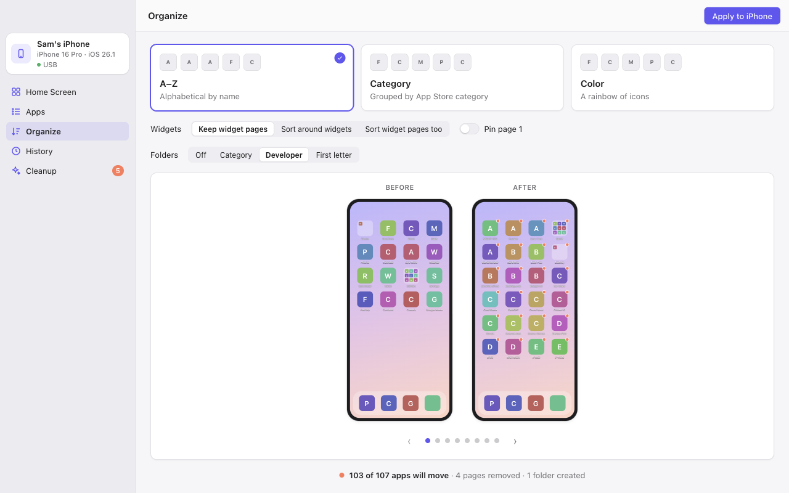
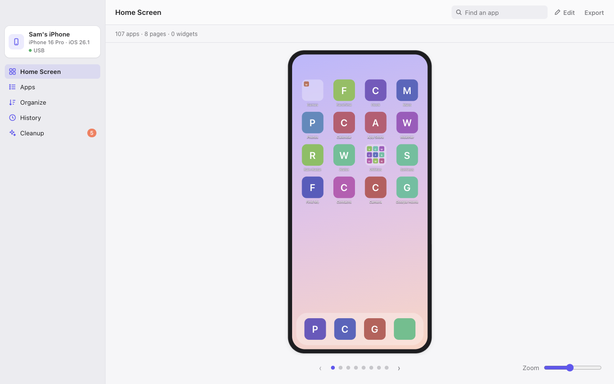

Sort your iPhone’s home screen from your computer
Hundreds of apps and no patience for dragging icons? Jiggle shows your home screen on your computer and rearranges it in one click: by name, by App Store category or by icon colour.
Free · macOS on Apple silicon or Intel · signed and notarized by Apple
Windows and Linux versions are still in beta

The preview above uses a demo phone, so the icons are placeholders.
Three steps, and you stay in control
Nothing is written to your phone until you press Apply.
-
Connect
Plug in your iPhone or iPad and tap Trust. Jiggle reads the home screen and shows it as it really is.
-
Preview
Pick a sort and see a before and after of every page. Change the options until it looks right.
-
Apply
Jiggle backs the phone up, writes the new layout, and checks it by reading it back. Restore is one click.
Everything for a tidy home screen
From a quick A–Z to hand-tuned layouts you can save and share.
A–Z, App Store category, or icon colour with a rainbow order you set by dragging.
One folder per category, developer or first letter, for groups of two or more apps.
Pages with widgets and widget stacks are kept, or sorted around, or filled in around them.
Drag and drop with live feedback, multi-select, folders, undo and redo, then push it to the phone.
Name a layout, switch back in one click, or export it as a file and import it on another computer.
Copy an arrangement from one device to the other, reflowed to fit its grid.
Made so you can undo it
A home screen you spent years on deserves care.
- An automatic backup before every change, and optionally one whenever a phone connects.
- The layout is checked before it is written, and read back after.
- iOS versions Jiggle doesn’t recognise open in read-only mode.
- Everything stays on your computer. The only network request is the App Store lookup for categories.

Questions
- What do I need?
- A Mac with Apple silicon or Intel (or a Windows or Linux PC, in beta), and an iPhone or iPad on iOS or iPadOS 17 or later (tested on 17, 18 and 26). On the download page, Mac users pick the .dmg file marked arm64 for Apple silicon or x64 for Intel. The Intel build is new and hasn’t been tested on Intel hardware with an iPhone yet. Unlock the phone and tap Trust the first time.
- Does it work on Windows or Linux? (beta)
-
Both versions are still in beta, for 64-bit Intel and AMD computers.
Neither has been tried with a real iPhone or iPad yet, so back your
phone up first. They are unsigned and connect over USB only. Download them only from
the
releases page.
Windows: get the file ending in -setup.exe. It needs Apple’s driver, which comes with the Apple Devices app or iTunes. Windows SmartScreen may warn you.
Linux: get the .AppImage file. It needs usbmuxd, and is built on Ubuntu 24.04, so older distributions may not run it. On Ubuntu 24.04, and on any system that doesn’t let apps create user namespaces, it runs with Chromium’s sandbox turned off, which removes one layer of protection. Install steps. - Is it on the Mac App Store?
- No. Talking to a phone over USB needs access that the App Store’s sandbox doesn’t allow, so Jiggle is a direct download. The Mac version is signed and notarized by Apple, and updates itself.
- Does it work over Wi-Fi?
- On a Mac, yes, once “Show this iPhone when on Wi-Fi” is turned on in Finder.
- Is it free? Is the code open?
- Yes to both. It is released under the GPL-3.0 licence, on GitHub.
Early software (v0.1). Jiggle uses the same device services as Finder, but Apple can change them in a new iOS version. Back your phone up before you apply a layout.